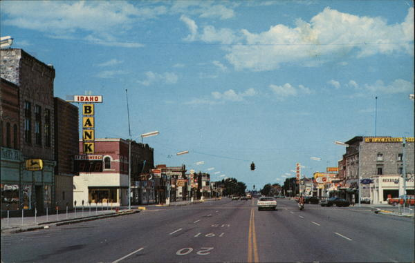

Target Audience
The Target audience are the people who are businnes owners, people who are involucrated in managing businnes in the area and professionals who work for the economy of the community who are members of the Chamber of Commerce in Rexburg or are looking forward to be part with.
Persona 1
Red Deer CEO
Clark Kent is the CEO and Owner of Red Deer restaurant. He is 50 years old, married, grandfather of 5 childs. Has a Master in Product Management.
He is a natural lider with a strong sense of organzation. One of his concerns is kepping and increasing the quality of products to gain the confidence and loyalty of costumers
Spends his work time managing company's overall operations
He feels confident using a computer, tablet and the phone. He uses email as his main way of communication
Persona 2
Delicious Cones Bussines Owner
Sarah Child is the business owner odf Delicious COnes. She is 40 years old, married, mather of of 4 kids. Has a Bachelors Degree on Bussiness Management
She is creative, good communicator and considered and achiver person. One of hier concerns is keeping client satisfaction and acknowledgement.
Spends her work time working along with his employees to ensure high quality and functionality.
She feels confident using a computer, tablet and the phone. She uses emails and text messages as her main way of communication
Scenarios
- How do a become part of the Chamber of Commerce in Rexburg?
- How do I contact the chamber of Commerce?
- What are the legislative updates for 2022?
- Business grow statistics
- Donations